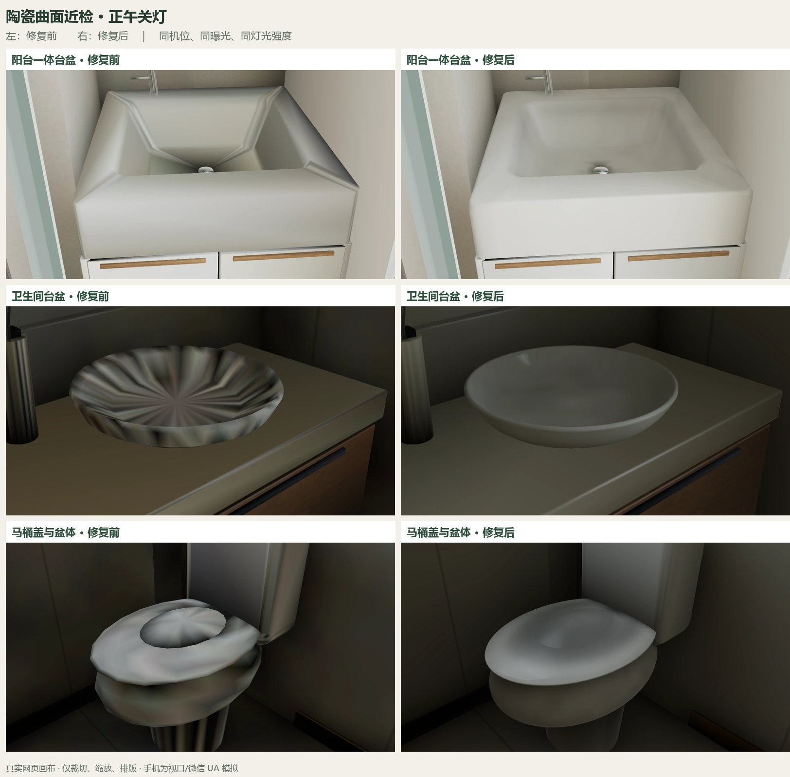
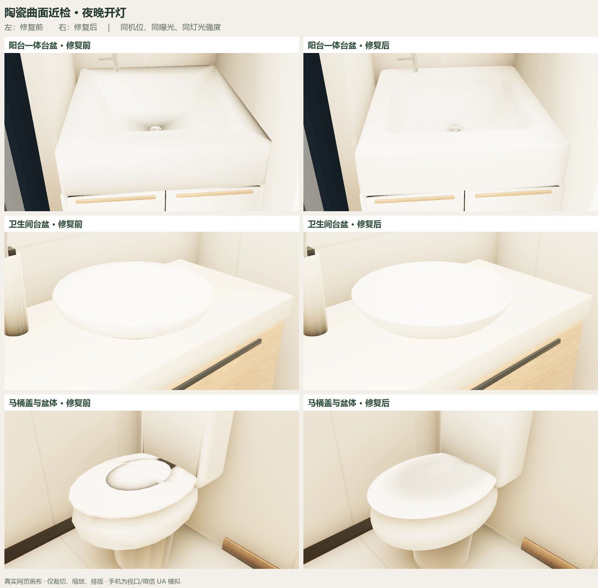
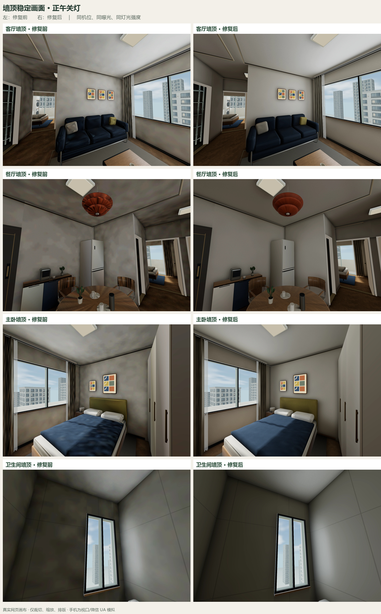

杭州 · 璞荟铭庭 / main 实际网页对比
墙顶斑驳与陶瓷折面修复
观察正午关灯后的墙顶，以及阳台台盆、卫生间台盆和马桶的曲面。所有画面均在固定光照和房间反射加载完成后采集；前后保持同一机位、曝光和灯光强度。
本轮修复针对稳定画面的烘焙噪声、暗部量化色带与陶瓷曲面。原默认灯光和曝光保持，夜晚开灯图仍使用原灯光强度；亮度取舍继续见独立对比页。
滑动查看同机位前后差异
修复前修复后
陶瓷近景
并排图使用相同裁切，便于检查盆沿、转角、盆底和高光。完整画布与手机视口在上方切换。


四处墙顶

修复内容与验证范围
建筑漫反射改为2048采样，关闭过早终止低能天光的自适应采样，并在独立UV区域内对线性HDR数据降噪，保留分离的太阳照明。家具漫反射1024采样、AO256采样；建筑与家具照明以16位高低字节保存，网页解码后插值；建筑运行时图集也保留双字节组合，避免重新降回8位产生色带。
两处台盆采用规则密集曲面和独立陶瓷材质，平面盆沿保持竖直法线，手机档保留曲面采样；马桶曲面增加细分。陶瓷不使用织物或石材凹凸纹理，照明降噪按位置和法线限制在相近表面内。没有对最终截图做平滑、调亮或阴影修图。
共40张实际WebGL画布（20组前后对比）：桌面和手机视口各7组正午关灯、3组夜晚开灯。原建筑快照、墙线、门洞和219张旧烘焙保持，新的Cycles照明与反射已重新生成。手机/微信UA、Windows WebKit与缺HDR/depth扩展检查属于模拟，物理手机微信仍待实际验证。单HTML约40.0 MB，首次加载体积较上一版增加，真机持续性能仍待验收。